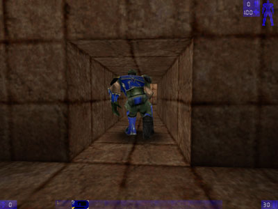
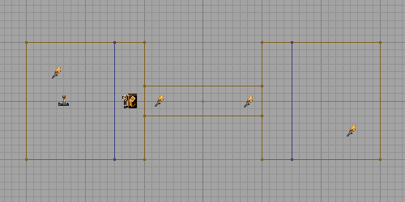

DuckingZone

|
Players in a DuckingZone actually become smaller when they duck – unlike normal Unreal Tournament where they just appear ducked (and are harder to hit with precision weapons). In a DuckingZone, ducking players can crouch through tunnels that would otherwise be too low for them.
http://mb.link-m.de/download/DM-DuckingZone.zip
The DuckingZone actor is distributed as a class embedded in DM-DuckingZone. See Embedding Code for details on how to get the actor into your own maps.
Created by Mychaeel by request of LegalAssassin.
There is no need for a UT2003 version of this class because players automatically become smaller when they duck.
Usage
The DuckingZone must start and end somewhere where the player can still safely stand. If the player would bump his/her head when leaving the zone, he/she'll appear half-way sunk into the ground outside the zone.

The blue lines are zone portals. The DuckingZone actor is located between the left zone portal and the tunnel. |
The DuckingHeight property specifies the collision height of ducked players in this zone. Note that the collision height is defined to extend from the middle of the player up and down; in other words, put half of the total height of a ducked player into this property.
Players ducking in a DuckingZone are subject to a row of undesirable side effects; most importantly, they're much harder to hit than regular players that duck, and their headshot area is smaller as well. It's not advisable to put a DuckingZone somewhere where players might actually want to shoot at each other.
Related Topics
Comments
ZxAnPhOrIaN: Nice component Mych! I have a cool reality suggestion: If you can do this, you should have the player crawl through the area, not the ducking state. Otherwise, it is fine!
Mychaeel: Hmm... not sure whether I understand what you mean. I'm bound to stick with the normal Unreal Tournament player animations (basically all the DuckingZone does is actually reducing the collision height). If there's a mod that provides crawling animations and support, modifying the DuckingZone to support that too shouldn't be an issue.
ZxAnPhOrIaN: I see...